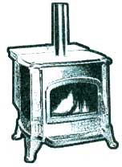
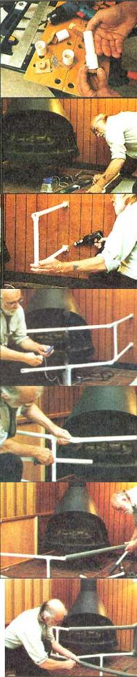
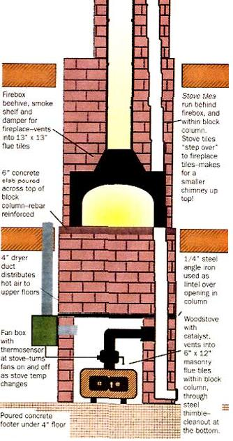

Burning Questions
October/November 1995
Reader's Forum on Solid-Fuel for '95
Over the past year, many readers have written in with thoughtful questions about wood heat. We thought that all of Mother's readers would be interested in the answers to several of the most interesting.
The Smoky Flue
Jean-Anne Sylvester from outside of Cloverdale, Indiana asks how to deal with wood stove with "...a stove pipe that is stuffed up into the chimney over a fireplace. When its windy outside, it won't catch fire without filling the house with smoke, and it continues to puff out smaller but eye-watering amounts throughout the fire's life."
This is a problem that has been around since Ben Franklin's day.
First, be sure the "stuffing" around the stovepipe is 101% fireproof, airtight and firmly fixed in place. Then check to see if the stove is getting enough fresh air to feed fire and flue exhaust. Open a window; if that solves the problem, consider installing an air-supply inlet from the cellar, or via ducting from the outside in the floor in front of the hearth. And leave that window open till you duct air in some other way. A smoldering fire and too little draft due to insufficient air can fill the house with carbon monoxide that can kill you in your sleep.
If (in violation of building and fire codes and common sense) the fireplace shares either a flue or a limited supply of combustion air with a flame-operated appliance-a gas water heater, say-the potential carbon monoxide danger can be even greater. Check, and if you have a shared flue, quit using the wood burner till you can manage a separate flue for it.
Since your stove smokes both on start -up and during the burn when wind blows (unless the problem is too little air supply), it has insufficient draft-which means that the chimney is not pulling well enough. This plus the installation into a fireplace scares me. There are so many potential fire hazards in old stove set-ups, so please have the fire inspector and/or a qualified installer of solid-fuel appliances check yours. The flue may be too small for the stove, may be clogged or the fireplace damper half-shut. An expert will remove the stove, clean out all ash and soot from stove and stove pipe, clean the flue, make sure there is a clear and adequate flue opening all the way to the roof, replace rusted stove pipe, and reinstall the stove correctly, making sure all connections are air tight.
A fair warning: the installer or building-inspector may find that the installation does not meet fire code, and can shut it down till it qualifies. Harsh perhaps, but a law that is intended to keep you safe and warm.
Your chimney may be located on an outside wall of the house, so it is hard to warm up. Or, the house may be under a hill or in a wind chute so natural air movement works against you. And/or the chimney may be too short. It's cheating, but you can use your electric hair dryer to heat a stubbornly cold flue... but not to keep it drawing. To improve draft, add a foot or two of ceramic to the chimney or install a metal flue-extender. To deflect wind or falling air, put a wind turbine or revolving air vane on the flue top.
Finally (or, perhaps first), be sure your fuel is dry-at least 6 months off the stump, and out of the woods and under cover long enough to be bone-dry on the surface and cut ends. Wet wood is hard to start and green wood will smoke.
Mary Olson's PAPPA BEAR
Mary Olson of Faribault MN operates a Day Care in her new home that came with a Fisher Poppa Bear III, a big pre-EPA welded steel stove that heats the whole house (with help of a room-air-circulating fan). The stove is installed according to code, and to the satisfaction of local day-care regulators, but they won't permit Mary to fire it up during Day Care until a railing is installed. She wants to know if there are any published performance comparisons for wood stoves, how she can reduce the heat pumped out by the Big Bear, how to put up a railing that isn't an eyesore and what price to ask if they decide to replace and sell the stove (that is in good shape and has needed only to have a fire brick or two replaced.)
This answer has three parts, so bear with us. We agree with the Minnesota Day Care licensers; little kids and radiating solid-fuel space heaters don't mix. One of my favorite young people will always carry scars on one hand from when he bumped into a stove despite a room full of older folks that were looking after him... and him alone. Just the thought of relatively few grownups in a wood-heated Day Care full of creepers, crawlers and toddlers should be enough to cause cold sweats.
No stoves but Shenandoah, Rite-Way or Ashley-type steel-boxed "Circulator"-type automated heaters (with metal shells around the firebox) are remotely safe to stumble against, and even they get too hot: a small stove gets just as hot as a big one.
It's tough to install a toddler-railing that doesn't look pretty obvious. It must be located far enough beyond the stove that it stays cool to the touch-that means that is should be at least three feet from a big stove like Pappa Bear. It must fireproof and sturdy but needn't be permanent. A hinged lamb creep or sections of low hog pen can be cut to fit and hinged together, then hung from hinges or pintles on the wall at each side of the stove and supported out front by splayed feet or pins set into holed plates or simple drilled holes in the floor. Ask for materials at a local feed/farm-supply store. But, draw up a plan and have the regulating authorities sign off on it before you carve up the floor
A better plan might be to install a fence like the one below, made of white PVC plumbing pipe with grey styrofoam pipe insulation as a cover. Both plastics are "fire-resistant" in the face of open flame, but will melt if they come in direct contact with a hot stove.
Restoring Brightwork
Several readers have asked if there is any way to bring back the shine to rusty finials, worn foot rests and other once-bright-plated ornamentation of an old stove other than expensive nickel-plating or spraying with aluminum ("yuck!!"-as one lady puts it) spray paint.
Posts and rails for the fence are made from PVC pipe fabricated with 90° and 45° "T" fittings and couplers. This is 3/4" white, cold water pressure supply pipe. Make cuts with a hacksaw and sand quickly. Joints can be pressed together for friction fit, glued temporarily with automotive gasket compound, or chemically welded with PVC cement.
We've seen quite a few stoves (usually rusted or over-fired to the point they are no longer safe to operate) put on display for their ornamental value, and painted with gloss- or matte-black, aluminum and copper spray paints. Some are decorated with hand-painted vines and flowers. A wood-heating purist might disdain these "cast-iron flower pots," but they can be attractive in the right setting.
Conventional paints will not hold up to stove-heat, so we tried treating some old iron with spray paint containing actual powdered metal. This isn't "Rustoleum" or an other well-known brand you'll find in every hardware store, but is made by small specialty outfits and sold in auto parts outlets. At about $10/spray can it isn't cheap. All the brands we tested claim to restore the shiny-bright sheen of chrome. None actually replaces the chrome plate (which is too hard and brilliant to replicate the soft luster of nickel, anyway). But, over old iron they do a better job than aluminum paint, and actually look more like nickel than chrome. The paint will wear quickly if a painted foot rest is used as intended, and it will gradually blacken under intense heat. But, a respray in spring will last for the six or eight warm months in any case.
Prepare the surface of old iron by removing rust and scale with a grinding wheel or a spring-steel wire brush on a powerful electric drill (be doubly sure to wear eye protection; rusty scale in an eye can be bad trouble). Then, to de-rust thoroughly, apply Naval Jelly (also from the auto-parts store) according to directions. If iron is badly pitted, you can try to smooth it with grinding wheel or file and emery paper. Spray on several thin coats of metal-powder paint (don't try to cover 100% of the surface with each pass). Let dry well between coats.
Rekindling the Romance
Finally, Doug Santaniello of Bridewater, NH writes:
"I've checked out the draft-controlled stoves, I've studied the firestove diagrams, I've looked at the ads for high-performance inserts. But I kept thinking, 'What's wrong with theses pictures?' and while reading in front of our traditional fireplace it came to me. Every one of those products involved fire under glass.
As a longtime woodburner, I love the efficiency and environmental safety of these old and new alternatives to the open hearth. But guys, that's not the point. Fireplaces are not for efficiency but for romance-the soul-deep satisfaction of baking directly in front of the flames and coals. You just can't make an apples-to-apples comparison.
When we built our house, the fireplace was one of the most brutal chores, costing many times over budget and dragging on for months, not to mention the terrifying weight of masonry to be hauled from basement to roof. But my wife and I say over and over again, with the flames dancing across the room, 'It was worth it. Every bit.’
In constructing the fireplace, I think that we've arrived at an ideal marriage, combining the romance of the fireplace with all the advantages of wood heat. Our solution was to combine a wood heater and a fireplace in the same structure. The diagram shows how we did it: a woodstove in the basement inside the fireplace column, venting out through a separate tile stack within the fireplace/chimney structure.
Here are the advantages. 1. You get both a stove and a fireplace for little additional money. If you own the stove (we did), the extra cost is about $300. 2. You get one of the safest possible places for a woodstove in a house (what could be safer than a concrete box?). 3. You keep all the mess-sawdust, ashes, smoke, insects-out of your living area. Actually, this was my main reason for doing it in the first place!
I had considered plumbing the stove into the hot water heat, but found that hot-air venting is much simpler, quickly bringing heat to the upper floors. We also get a nice thermal-mass advantage as the woodstove heats the masonry and concrete.
We were concerned about an untended fire downstairs, so we use smoke and temperature detectors throughout the house. And I've been thinking about some enhancements-an outside air intake for the woodstove, dust and humidity control for the air system, a temperature monitor upstairs to let us know when to re-fuel.
But as it stands, the system works just great, giving us the satisfaction of wood heating and light gracing our living room.
Doug Santaniello's Fireplace/Woodstove hybrid
Used Stoves
Mary Olson's Poppa Bear is the largest of the firebrick-line "step-stoves" made by the Fisher Stove Works of Eugene OR, before they and a lot of other makers of airtight stoves were run out of business by state emission controls and efficiency requirements. Some poorly-welded early step-stoves were prone to warp (the lower, front section of top became much hotter than the step-up at the rear of the stove). However, late-model Fishers are some of the finest welded-steel stoves made (guaranteed for a lifetime-that is meaningless now, as the maker is kaput) and will heat your house so long as you treat them with respect. They are generally a good buy on the used market.
Pre EPA airtight stoves such as the Fishers can produce a greasy, noxious, creosote-laden smoke if operated in an air-starved mode. According to EPA regulations implementing the Clean Air Act of 1972, they may not be manufactured or sold new in the U.S.A., but are "grandfathered"-legal to buy, sell, own and operate as used appliances-and may be operated nearly everywhere but a handful of cities, coastal and valley inversion bowls where the smoke accumulates and becomes a smog so virulent it has been known to eat the paint off cars.
BUT, before you buy or sell, check the local building, health (air-quality) and fire codes. Many smog-prone jurisdictions (and a few that really don't need the controls, but want to legislate political correctness) will approve nothing but "government stoves." Even removing and trying to put the stove back after remodeling can void the grandfather clause that exempts stoves in place prior to adoption of restrictions.
With thousands of stove models made since the 1700s, there are no published value-comparisons that mean much. Besides, the rule of thumb is simple; the bigger the stove's firebox, the more fuel it can hold, the more radiating surface it has, thus the more energy it can handle, and the more space it can heat for up to the maximum fire-life for any stove: about eight hours. A big 1-ton black-iron kitchen range has the same size firebox as a lovely little green-enameled Jotul #100 box stove. Either will heat a cabin or a room or two, but not a whole house.
A Poppa Bear will heat the house all night long in any weather, but can cook you if temperature outdoors is balmy. To produce less heat in any free-breathing stove, keep the fire small, the door open and damper all or part-way open-for less fuel-efficiency, cleaner stack-exhaust, but less heat. Not till you close the door so the stove is fully airtight, and ration air flow through a partly-open draft control in front and damper in back, do you put the stove into high-output air-starved (and, super-smoky) mode.
Used wood stoves are advertised in country-town newspaper Classifieds and "Want-Advertiser"-type magazines. Asking prices for good-quality c. 1970 airtight stoves in good operating condition range from $150 to $1200 depending on size, construction quality, finish, age, cosmetic condition, location (they are HEAVY) and season of the year.
The more a stove cost originally, the more it goes for used. Cast iron models from Canada, the U.S. and Europe are most expensive, welded steel next, and Asian-imports made of thin iron castings least expensive.
All genuine antiques and some superior-quality modern stoves-such as soap-stone parlor stoves and cast-iron cook ranges-can appreciate with age.
A large-sized U.S. iron stove such as a Vigilant from Vermont Castings or an Irish Waterford will go for perhaps $750. A fair price for a Taiwan import of the same capacity, and in good (uncracked) condition would be about $250, while a big, top-quality steel stove such as the Fisher Poppa Bear will sell for around $500. Smaller but still top-quality models such as the Vt. Castings Defiant or a Fisher Mamma or Baby Bear will sell for perhaps $50 or maybe $100 less.
Why Sell?
For what its worth We'd would never sell a Fisher or any other well-designed, well-made pre-EPA airtight if we had a barn with a vacant corner. Clean it well, coat it inside and out with axle grease and store it till the next fossil-fuel crisis. Sure as the sun rises in the East, gas lines will lengthen and heating oil will double in price some time in the future. And, sure as the sun sets in the West, fine old low-tech heaters like the FisherBears will become as valuable as old stoves were back during the 1970's Oil Embargo when folks were offering megabucks for anything that would keep then warm with a wood fire.
|
 Dowel (1) is fastened to plywood (2) with wood screws (3) through hole in center of ply and into pilot hole in center of dowel. Plywood is then affixed to wall, floor or woodwork with cement or fasteners. Fence-pipe (4) is slipped over dowel, and held on with nail (5) slipped in hole through pipe and into dowel. |
 |
 |
|
 |
|
|